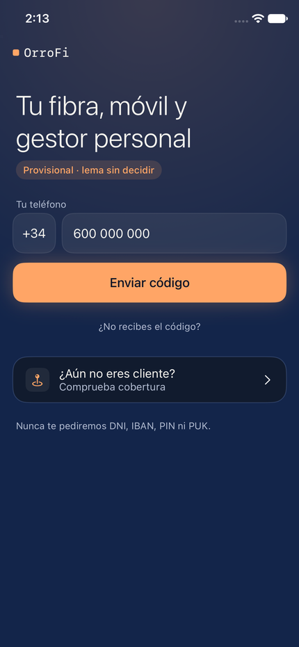
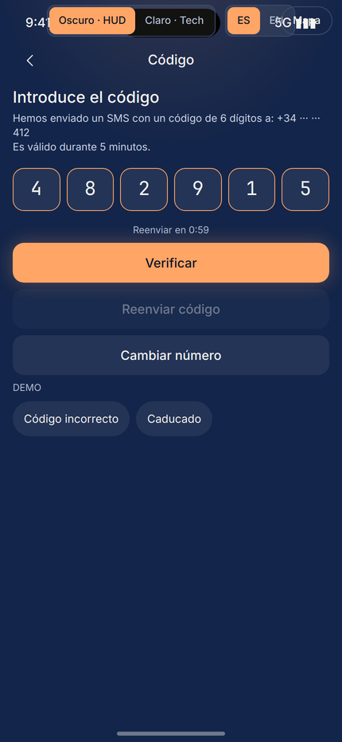
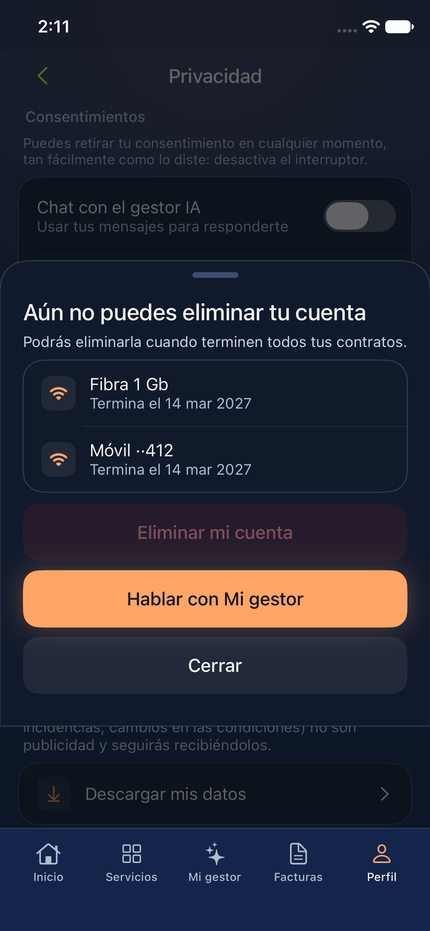
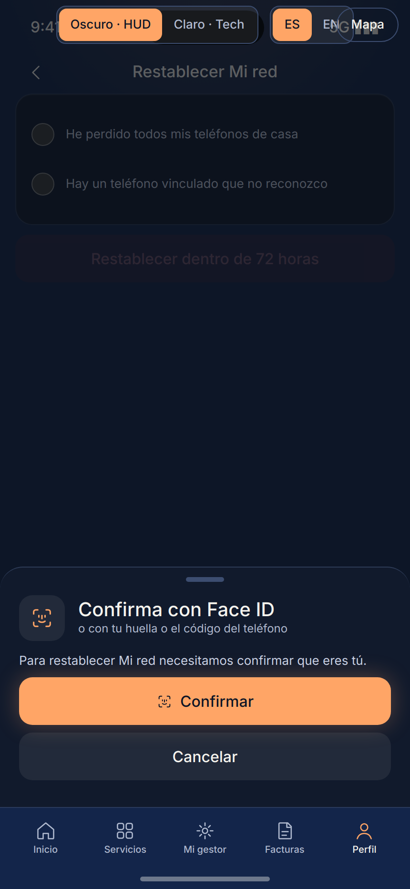
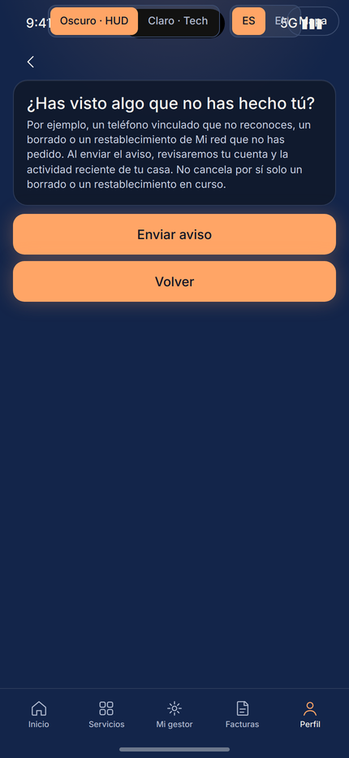
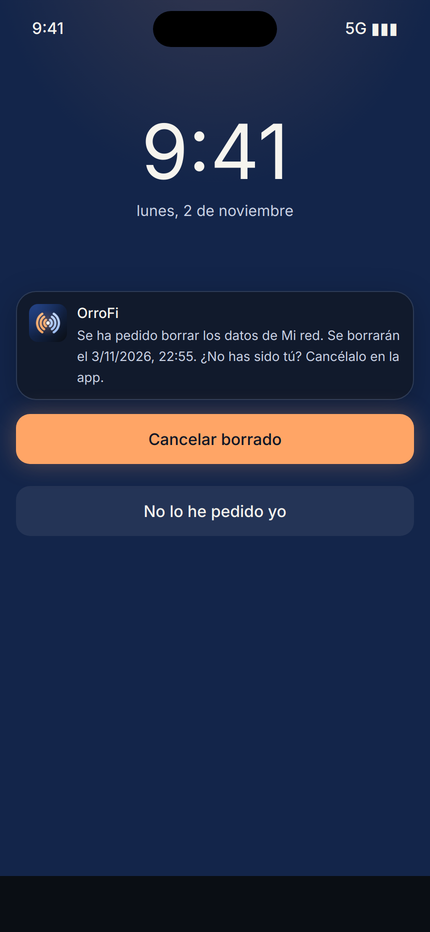
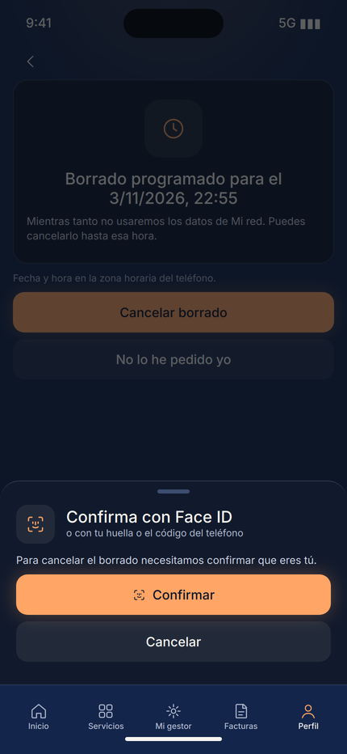

Узнаём вас при открытии
Если вход защищён, телефон узнаёт лицо раньше, чем откроётся дом. На главную так попадаете только вы.

Как войти, забрать свои данные, стереть домашнюю сеть или собрать её заново и как сказать нам, если в журнале появилось чужое действие.
По вопросам данных: privacidad@orrofi.es. При необходимости можно обратиться в испанское агентство по защите данных (AEPD).
Сайт не собирает данные через формы и не использует cookies. Хостинг GitHub Pages (GitHub, Inc., США) технически получает IP-адрес и сведения о браузере при открытии страниц. Если вы пишете нам на privacidad@orrofi.es, PADELADA WORLD SL использует ваше письмо только для ответа (ст. 6(1)(f) RGPD) и хранит его, пока нужно для ответа. Вы вправе получить доступ к данным, исправить, удалить или ограничить их, возразить против обработки и подать жалобу в AEPD (aepd.es). Полная политика конфиденциальности приложения появится до его запуска.
Если вход защищён, телефон узнаёт лицо раньше, чем откроётся дом. На главную так попадаете только вы.
Введите номер из договора и попросите код в SMS. Чужой номер приложение не примет: он должен совпадать с договором.

Шесть цифр из сообщения. Код живёт недолго; если он погас, запросите новый и не торопитесь перебирать старые.

Цифры не те. На экране спокойно сказано, что попытка не зачтена и сколько ещё можно ошибиться.

Этот код уже старый. Возьмите новый и введите его, пока он свежий.

Несколько неверных кодов подряд, и вход на время закрывается. Так номер не перебирают без конца.

Сообщение молчит. Здесь короткие проверки: тот ли номер, есть ли сеть, не рано ли просить код снова.

Согласия, копия ваших данных и удаление учётной записи собраны в одном месте. Отсюда не начинают удаление домашней сети: у Mi red свой путь.

Удаление учётной записи назначено, но ещё не сделано. Пока срок не вышел, решение можно забрать назад.

Пока договоры действуют, учётную запись удалить нельзя. Экран объясняет это прямо, без тупиковой кнопки.

Код подтверждает, что удаление просите вы. Без него заявка не уходит.
Последний спокойный вопрос: точно стереть ваши данные? Пока вы не подтвердили, ничего не начинается.
Просите копию данных на почту. Приложение скажет, что запрос принят, и не заставит ждать у открытого экрана.

Сброс уместен, если телефоны дома потеряны или в сеть вошёл незнакомый. Данные Mi red исчезнут не в ту же минуту: пока срок не вышел, отмену может сделать телефон владельца, который уже был привязан.

Коротко и без смягчений: какие сведения о Wi‑Fi и устройствах пропадут, когда сброс свершится.
Повторное согласие. Такой шаг не делается с одного касания.
Поле для одноразового кода из SMS. Пока код не введён, сброс не назначается.
Уведомления тем, кто в доме: сброс запрошен и скоро начнётся. Если это были не вы, отменить можно прямо из уведомления.

Остальным в доме уходит письмо: сеть собираются сбросить. Новость не должна застать их врасплох.
Напоминание, что срок близко и отмена ещё открыта. После него времени останется совсем мало.
Сброс уже стоит в сроке. До назначенного часа его можно отменить с этого телефона или сказать, что вы его не просили. День и час на кадре вымышлены.

Сброс снят. Сеть живёт, как жила, и заново подключать роутер не нужно.
Сбросов подряд слишком много. Приложение просит подождать и не крутить сеть по кругу.
Сброс уже идёт. Подождите на этом экране, пока он не закончится.
Сеть сброшена. Дальше роутер и устройства представляют заново, как в первый раз.
Приложение спрашивает причину: меняете роутер, уезжаете из дома или случилось что-то другое.
Сброс возвращает домашнюю сеть к началу. Здесь владелец только открывает этот путь, само стирание ещё впереди.
Чужую сеть сбросить нельзя. Если дом не ваш, дальше этого экрана хода нет.
Face ID, чтобы сброс не запустил кто-то посторонний с вашего телефона.
Первое подтверждение не вышло. Система просит Face ID ещё раз, и только потом пускает дальше.

Код из SMS подтверждает, что сброс просит сам владелец, а не тот, у кого случайно оказался открытый телефон.
Если в доме всплыл чужой телефон, удаление или сброс, которого вы не просили, скажите об этом здесь.
Сигнал сам по себе не останавливает уже идущее удаление. Чтобы остановить, воспользуйтесь отменой на том экране.

Сигнал принят. Второй раз отправлять его не нужно: заявка уже у поддержки.

Спокойное объяснение, что именно исчезнет из Mi red, если вы не передумаете. Удаление не мгновенное: время на отмену есть.

Сначала почта, на которую придут предупреждения. Так новость об удалении не потеряется.
Короткое согласие перед серьёзным шагом. Случайное касание до удаления не доводит.
Второе подтверждение. Приложение ещё раз спрашивает, точно ли это ваше решение.
Face ID проверяет, что удаление просит человек, чей это телефон.
Уведомление тем, кто в доме: запрошено удаление данных Mi red. Если это были не вы, отмените его или нажмите «No lo he pedido yo». Число в уведомлении вымышлено.

Повторное напоминание, пока отмена ещё открыта. Пропустить его значит подойти к сроку вплотную.
Вы останавливаете удаление, пока это ещё позволено. Данные сети остаются.
Иногда отмена уже закрыта. Приложение говорит об этом прямо и не предлагает обходной кнопки.
Удаление дошло до конца. Прежняя картина домашней сети в приложении стёрта.
Удаление снято. На экране совет сменить код телефона и пароли роутера и Wi‑Fi, раз запрос мог быть чужим.

Короткий итог: чем закончился запрос и что это значит для телефонов дома.
Отсюда владелец начинает удаление данных домашней сети Mi red. Учётную запись это не стирает: у неё отдельный путь.
Чужую сеть удалить нельзя. Если вы не владелец, экран на этом остановится.
Удаление уже назначено, данные пока на месте. Чтобы остановить его, подтвердите, что это вы: лицом, отпечатком или кодом телефона. Срок на кадре вымышлен.
